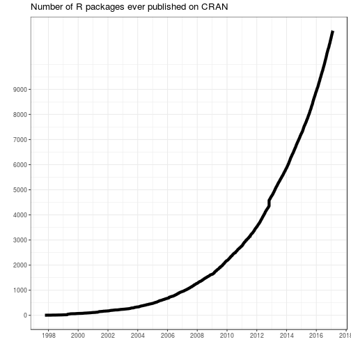
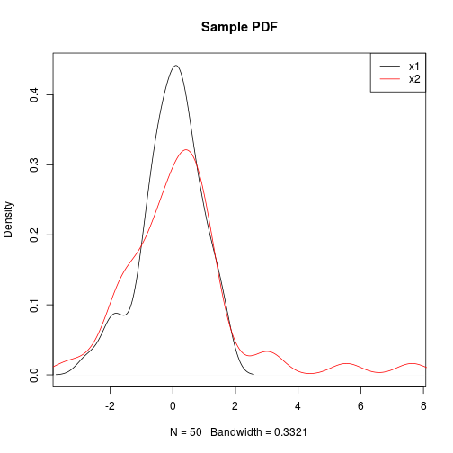
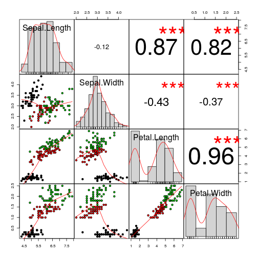
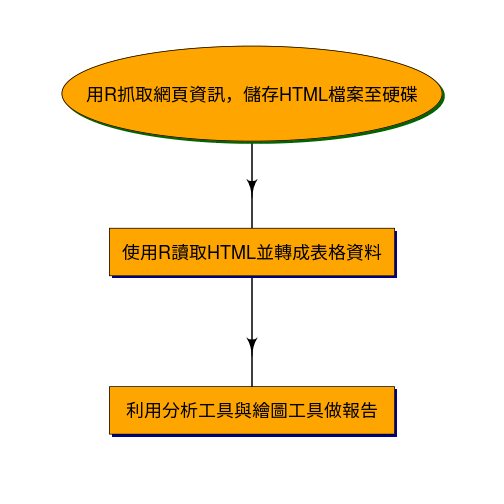
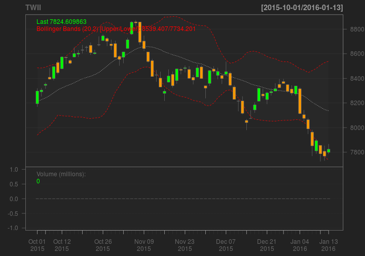
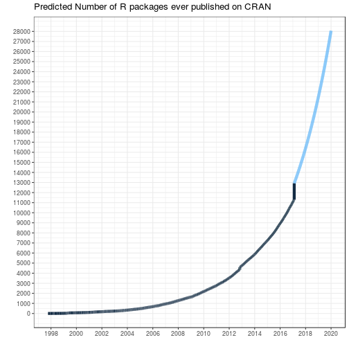
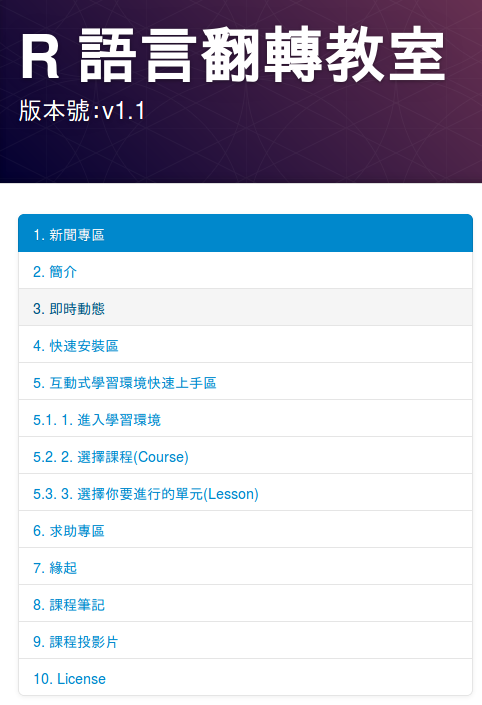
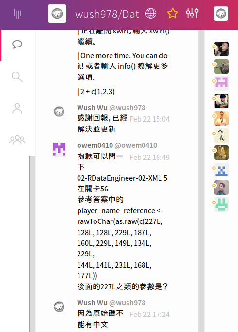

- R 的簡介
- R 的傳統用途
- R 的社群與近代R 的演變
- 如何學習R 語言
進擊的R 語言
Wush Wu
國立台灣大學
本次課程目錄
R 簡介
R 很容易和其他工具整合
R 很容易擴充和客製化

R 的傳統用途
範例 - 探索數據的分佈
- 統計很多理論都需要常態分佈
- 但是一組數據真的是常態分佈嗎？
範例 - 探索數據的分佈
plot(density(x))

範例 - 探索數據的分佈
- 做「是否為常態分佈」的統計檢定？再一行：
shaprio.test(x)
Shapiro-Wilk normality test
data: x
W = 0.9291, p-value = 4.427e-05
範例 - 探索數據的分佈
- 比較兩個數據是不是來自相同的分佈？沒問題
plot(density(x1), xlim = range(c(x1, x2)), main = "Sample PDF")
lines(density(x2), col = 2)
legend("topright", c("x1", "x2"), lty = 1, col = 1:2)
範例 - 探索數據的分佈

範例 - 探索數據的分佈
- 檢定？
ks.test(x1, x2)
Two-sample Kolmogorov-Smirnov test
data: x1 and x2
D = 0.14, p-value = 0.7166
alternative hypothesis: two-sided
R 是做統計的首選工具之一
- 內建大量統計相關的功能
- 繪製統計圖表、進行統計檢定...
- 擁有大量第三方開發的統計套件
- 範例：supc 一個實做(Shiu and Chen 2016)的R 套件
資料科學，不只是統計...
- 收集數據
- 清理數據
- 大量數據
- 分析結果的呈現
R 的社群與近代R 的演變
什麼是社群?
- 依照各種屬性所展開的人際關係
什麼是R 社群?
- 開發者
- 貢獻者
- 使用者
社群的力量
- 工具的可靠性
- 使用者的人數決定工具的可靠度，付錢的工具不一定可靠（要夠紅）
- 開發的速度
- 工程師很貴
- 社群會幫忙的開發與測試（要夠紅）
- 開發的方向
- 社群會給發展方向的回饋（要夠紅）
範例 - 相關性
- R 擁有許多你想像不到的方式來探索數據
- 他們都來自於世界各地的貢獻者
範例 - 相關性
suppressPackageStartupMessages(library(PerformanceAnalytics))
chart.Correlation(iris[-5], bg=iris$Species, pch=21)

範例 - 經濟學人風格的視覺化
社群知道資料科學的需要
- 社群知道傳統的R在以下功能的不足
- 資料的收集
- 資料的清理
- 報表的呈現
R Core Team (主導者) v.s. R Packages (社群)
- R Core Team 對新需求的要求很保守
- 正確姓是絕對的
- 向下相容: 新功能要能在十年前的電腦上運作
- Community: 那我們就自己寫套件來玩
- GitHub · Build software better, together
- Hadley降低了寫套件的難度
我們仍然對R Core Team 非常尊敬
- 現在已經有 70000+ 次的更動
- 在2009年10月9日時達到50000次更動 by Prof. Ripley
社群補上了R 在資料科學上不足的部份
- 由於R Core Team相對保守，在Hadley大大降低套件開發的門檻之後，社群即以百花齊放的套件來解決R 的不足
- Hadley Wickham, the Man Who Revolutionized R
資料的收集
- R 已經可以寫網路爬蟲
- httr, xml2, rvest, ...
- R 可以讀取、處理許多資料格式
清理資料
- 資料的格式需要校正
- 常見的例子：
1,234
- 常見的例子：
- 資料有缺失
- 實務的資料，有時會用如
-99來代表資料的遺失
- 實務的資料，有時會用如
- 調整資料的意義，為資料整合作準備
常見的分析流程

範例：政府招標資訊網
- 中華民國政府電子採購網
- 利用決標查詢功能來瀏覽與抓取決標資料
- 時間範圍自2013年10月至2015年11月
- 一共108360筆決標資料
- 決標資料內容：
- 機關資料，如：名稱、地址、聯絡人與聯絡電話等
- 採購資料，如：案號、招標方式、決標方式、標的分類、辦理方式與相關法源依據等
- 投標廠商，如：廠商統編、名稱、決標金額等
- 決標品向，如：品向名稱以及得標廠商的相關資料
- 決標資料，如總決標金額、履約執行機關等
範例：政府招標資訊網
2015-12-21 08:48:44 INFO::Crawling page from 2013-10/00105-page.csv.gz
2015-12-21 08:48:44 INFO::Crawling (1/100 2013-10:2013-10/00105-page.csv.gz)
2015-12-21 08:48:44 INFO::Crawling (2/100 2013-10:2013-10/00105-page.csv.gz)
2015-12-21 08:48:44 INFO::Crawling (3/100 2013-10:2013-10/00105-page.csv.gz)
2015-12-21 08:48:44 INFO::Crawling (4/100 2013-10:2013-10/00105-page.csv.gz)
2015-12-21 08:48:44 INFO::Crawling (5/100 2013-10:2013-10/00105-page.csv.gz)
2015-12-21 08:48:44 INFO::Crawling (6/100 2013-10:2013-10/00105-page.csv.gz)
2015-12-21 08:48:44 INFO::Crawling (7/100 2013-10:2013-10/00105-page.csv.gz)
2015-12-21 08:48:44 INFO::Crawling (8/100 2013-10:2013-10/00105-page.csv.gz)
2015-12-21 08:48:44 INFO::Crawling (9/100 2013-10:2013-10/00105-page.csv.gz)
2015-12-21 08:48:44 INFO::Crawling (10/100 2013-10:2013-10/00105-page.csv.gz)
2015-12-21 08:48:44 INFO::Crawling (11/100 2013-10:2013-10/00105-page.csv.gz)
2015-12-21 08:48:44 INFO::Crawling (12/100 2013-10:2013-10/00105-page.csv.gz)
2015-12-21 08:48:44 INFO::Crawling (13/100 2013-10:2013-10/00105-page.csv.gz)
2015-12-21 08:48:44 INFO::Crawling (14/100 2013-10:2013-10/00105-page.csv.gz)
範例：政府招標資訊網

範例: 股票資料
library(quantmod)
getSymbols("^TWII")
head(TWII)
| TWII.Open | TWII.High | TWII.Low | TWII.Close | TWII.Volume | TWII.Adjusted |
|---|---|---|---|---|---|
| 7871.41 | 7937.26 | 7843.60 | 7920.80 | 5710600 | 7920.80 |
| 7954.96 | 7999.42 | 7917.30 | 7917.30 | 5951400 | 7917.30 |
| 7929.89 | 7955.90 | 7901.24 | 7934.51 | 5717400 | 7934.51 |
| 7940.20 | 7942.23 | 7821.71 | 7835.57 | 5181400 | 7835.57 |
| 7778.57 | 7797.57 | 7736.11 | 7736.71 | 4292400 | 7736.71 |
| 7778.38 | 7827.93 | 7778.38 | 7790.01 | 4516000 | 7790.01 |
範例: 股票資料
chartSeries(TWII, subset = "last 4 months", TA = c(addVo(), addBBands()))

範例: 棒球分析
library(Lahman)
head(Teams[,c("yearID", "name", "Rank", "W", "L", "R", "RA")])
| yearID | name | Rank | W | L | R | RA |
|---|---|---|---|---|---|---|
| 1871 | Boston Red Stockings | 3 | 20 | 10 | 401 | 303 |
| 1871 | Chicago White Stockings | 2 | 19 | 9 | 302 | 241 |
| 1871 | Cleveland Forest Citys | 8 | 10 | 19 | 249 | 341 |
| 1871 | Fort Wayne Kekiongas | 7 | 7 | 12 | 137 | 243 |
| 1871 | New York Mutuals | 5 | 16 | 17 | 302 | 313 |
| 1871 | Philadelphia Athletics | 1 | 21 | 7 | 376 | 266 |
範例: 棒球分析
範例: 棒球分析
| playerID | yearID | W | L | ERA |
|---|---|---|---|---|
| wangch01 | 2005 | 8 | 5 | 4.02 |
| wangch01 | 2006 | 19 | 6 | 3.63 |
| wangch01 | 2007 | 19 | 7 | 3.70 |
| wangch01 | 2008 | 8 | 2 | 4.07 |
| wangch01 | 2009 | 1 | 6 | 9.64 |
| wangch01 | 2011 | 4 | 3 | 4.04 |
報表的呈現
Call:
lm(formula = dist ~ speed, data = cars)
Residuals:
Min 1Q Median 3Q Max
-29.069 -9.525 -2.272 9.215 43.201
Coefficients:
Estimate Std. Error t value Pr(>|t|)
(Intercept) -17.5791 6.7584 -2.601 0.0123 *
speed 3.9324 0.4155 9.464 1.49e-12 ***
---
Signif. codes: 0 '***' 0.001 '**' 0.01 '*' 0.05 '.' 0.1 ' ' 1
Residual standard error: 15.38 on 48 degrees of freedom
Multiple R-squared: 0.6511, Adjusted R-squared: 0.6438
F-statistic: 89.57 on 1 and 48 DF, p-value: 1.49e-12
報表的呈現
library(sjPlot)
sjt.lm(lm(dist ~ speed, cars))
| dist | ||||
| B | CI | p | ||
| (Intercept) | -17.58 | -31.17 – -3.99 | .012 | |
| speed | 3.93 | 3.10 – 4.77 | <.001 | |
| Observations | 50 | |||
| R2 / adj. R2 | .651 / .644 | |||
報表的呈現
現在的R ，是一個資料科學的「解決方案」
- 所有的資料分析所需功能，都可以透過R 完成
R 核心功能 v.s. 社群提供的功能
- 核心函數已經提供許多整理資料的功能
- 字串:
gsub、regmatch、substring、paste... - 數值化:
as.numeric... - 類別化:
cut、factor... - 泛用:
split...
- 字串:
- 核心函數的命名較無系統，只能透過經驗與增廣見聞來習得
R 核心功能 v.s. 社群提供的功能
- 社群提供更多五花八門的手法
- 字串:
stringr、stringi - 時間:
lubridate
- 字串:
- Hadley 自行開創一套整理資料的體系:
dplyr: 以類SQL 的方式讓我們有系統化的手法處理資料(表)- SQL(Structured Query Language) 是處理資料最常用的工具之一，個人認為這個工具在工作上比R 更重要
- 學dplyr可以順便學SQL的概念，許多基本功能兩者是互通的
- Pipeline Operator:
%>%- 讓整理資料的程式碼寫起來更愉悅(?)
台灣的R 社群
- 社群是可以從自己開始創造
- 讀書會、同好會
Taiwan R User Group
- 創立於2012年10月，第一次meeting在台大博理館
- 聚會、增廣見聞與交朋友
- 辦過多場workshop
- 媒合了多個創業團隊
ptt R_Language
- 開板於2013-03-28
- 大家求救的好地方
- 有熱心的板友常駐
- 請不要擔心問出笨問題、Google的問題...
故事: 某天，某個問題...
程式諮詢
(做21點的遊戲)
[問題敘述]:
電腦對電腦玩，目前卡在
sample(52)
cards<-sample(52)
num<-cards%%13
故事: 現任板主非常非常非常熱情...
get_num = function(cards){
factor(cards %% 13, levels = 0:12, labels = c(1:10, "J", "Q", "K"))
}
get_suit = function(cards){
factor((cards-1) %/% 13, levels = 0:3,
labels = c("spade", "heart", "diamend","club"))
}
desk = sample(1:52)
n_player = 2
num_cards_out = 0
player_cards = vector('list', n_player)
故事: 結果...
同學作業要自己做喔
老師會不定期來查水表
誰作業跟這篇一樣就GG了
希望這學期不用動用程式碼比對工具
P.S. 老師已備份這篇
你也可以改變R 語言
- 什麼是開放自由？
- 你可以擁有對事情做出改變的權力
- 你可以成為R 的社群的一份子:
- 貢獻R 的套件、參與發展方向的討論
- 在各地或各處的R 社群交流(問問題、討論、解決問題)
- 推廣R
進擊的R 語言
R 是活生生的在變化的工具

R 仍然正在更新
[Rd] R 3.3.3 on March 6
Peter Dalgaard pd.mes at cbs.dk
Sun Feb 5 15:14:41 CET 2017
...
The wrap-up release of the R-3.3.x series will be on Monday, March 6th.
Package maintainers should check that their packages still work with this release. In particular, recommended-package maintainers should be extra careful since we do not want unexpected turbulence at this point.
On behalf of the R Core Team
Peter Dalgaard
...
出處: https://stat.ethz.ch/pipermail/r-devel/2017-February/073705.html
結論
- 介紹R 的發展史
- R 身為工具的定位，以及定位的演化
- 統計分析工具 ==> 資料科學的解決方案
- 社群對R 造成的影響
- 現代的R 是一個資料科學的解決方案
- 推薦學R 的主因
- R 仍然在不停的演進
如何學習R 語言
至聖先師 孔子如是說
- 學R 不思則罔
- 思R 不學則怠
上手R 、自學R
- 從0 --> 1
- 從1 --> 10
- 從10 --> 100
R 的自學等級
這學期的目標
- 具備用R 處理資料的能力
- 具備整合不同來源資料的能力
- 具備資料視覺化的能力
- 具備自學R 的能力
R 語言翻轉教室

線上聊天室
